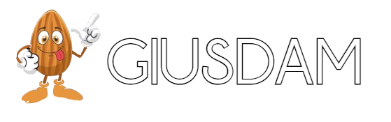
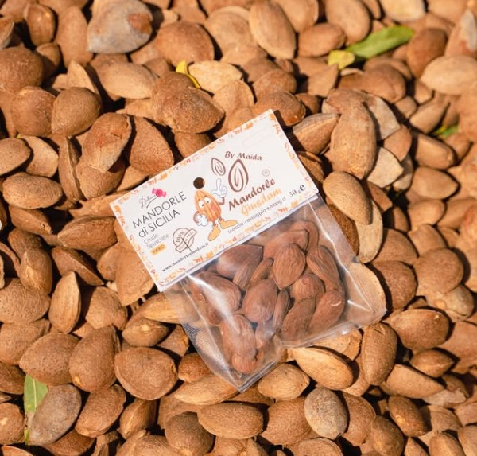
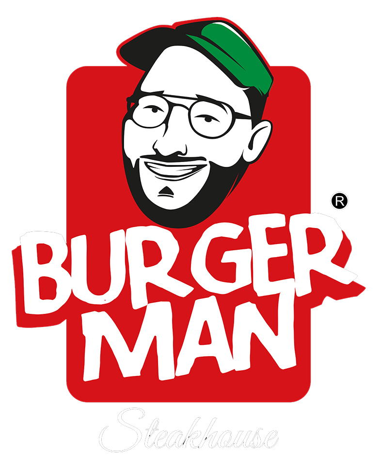
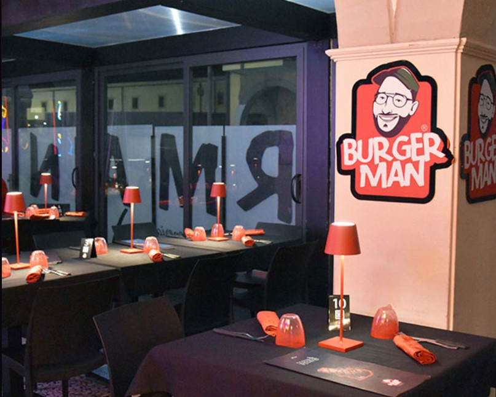
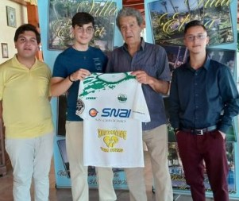
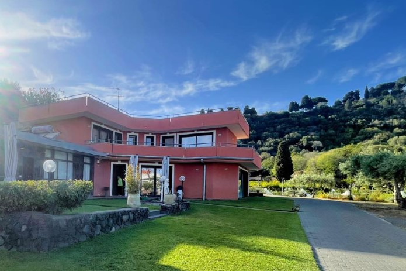
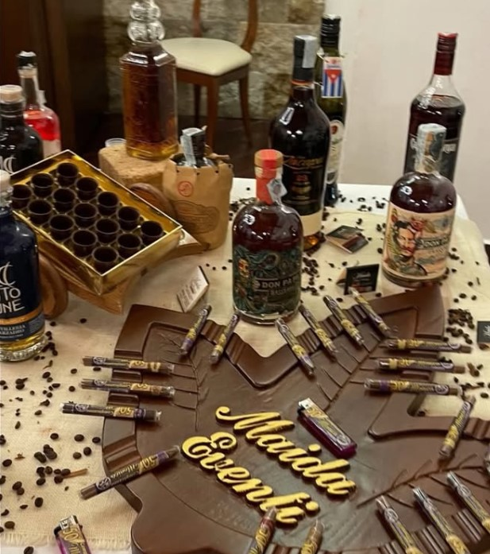

Technical Partner

Sponsor Ufficiali

SNAI San Gregorio
Il nostro progetto non avrebbe visto luce se non fosse stato per l'aiuto di Fabio e della sua famiglia, che gestiscono il centro SNAI di San Gregorio. In loro non abbiamo trovato solo aiuto, ma anche una accoglienza fuori dal comune e una maturità sportiva importante.


Mandorle Giusdam
La Famiglia Maida si distingue per l'accurata selezione e lavorazione delle mandorle, assicurando prodotti di qualità eccellente nel loro magazzino. Siamo grati che abbiano scelto di supportare il nostro progetto.


Burgerman Steakhouse
Collaborare con Luca, proprietario e faccia di Burgerman Steakhouse, per noi è sempre una gioia. Ha sempre creduto nel progetto sin dall'inizio, e contniueremo a lottare insieme per raggiungere traguardi sempre più alti.

Villa Elena Ricevimenti
Lo staff di Villa Elena è per noi come una seconda famiglia. E' stato lì che il nostro progetto, o meglio, il nostro sogno, è nato ufficialmente il 17 maggio 2024. Il proprietario, il commendator Giuseppe Fasone, ci continua a dare consigli che, grazie alla sua immensa esperienza, ci aiutano nelle relazioni umane.

Masseria La Timpa
Portere il nome di un'eccellenza del territorio Valverdese come Masseria la Timpa per noi è un lustro. Parliamo di un eccellenza assoluta nel campo della gastronomia. Insieme puntiamo a portare alto il nome di Valverde, sia nella cucina che nello sport.

Maida Cigar Catering
Collaborare con Calogero Maida, detto "Lillo", è un privilegio, in quanto la realtà di cui è a capo fa parte delle eccellenze del territorio siculo nel settore dei tabacchi lavorati e del catering. Insieme, puntiamo a portare in alto il lavoro e le idee della nostra terra.